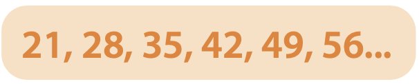

<!--+parrafoinputs(['La mayoría de los liberales eran', ['civiles', 0],])--><!DOCTYPE html>
<html lang="es">
  <head>
    <meta charset="UTF-8"/>
    <meta name="viewport" content="width=device-width, initial-scale=1.0"/>
    <title>Confirmo lo que aprendí</title>
    <link rel="stylesheet" href="https://fonts.googleapis.com/css2?family=Montserrat&amp;display=swap"/>
    <link rel="stylesheet" href="https://cdnjs.cloudflare.com/ajax/libs/animate.css/4.0.0/animate.min.css"/>
    <link rel="stylesheet" href="https://stackpath.bootstrapcdn.com/bootstrap/4.5.0/css/bootstrap.min.css"/>
    <link rel="stylesheet" href="../../assets/font/stylesheet.css"/>
    <link rel="stylesheet" href="../../assets/assets.css"/>
    <style>
      .blank{border-bottom:2px solid var(--main);width:120px;display:inline-block}
      .fr{display:inline-block;text-align:center;vertical-align:middle}
      .choose .options div hr,.fr hr{borde:none;border-top:2px solid var(--sec);min-width:40px;margin:0}
      .choose .options div{background:#f5f5f5;padding:6px;border-bottom:none;border-radius:6px}
      .choose .options div.active{border:2px solid var(--main);background:#fff;box-shadow:4px 4px 0 rgba(0,0,0,.1)}
      .choose .options div{ display: flex; flex-direction: column; justify-content: center; align-items: center; }
      .choose .options div img{ max-width: 220px; border-radius: 6px; }
      img{ display: block; margin: 0 auto; width: 100%; max-width: 380px; }
      img.small{ max-width: 180px; }
      img.big{ max-width: 80%; }
      .choose .options div{ display: flex; flex-direction: column; justify-content: center; align-items: center; }
      .choose .options div img{ max-width: 220px; border-radius: 6px; }
    </style>
    <body></body>
    <div class="container my-5 animate__animated animate__fadeIn animate__delay-1s" id="app">
      <h1>Confirmo lo que aprendí</h1>
      <div class="instruccion mt-5">Marca la respuesta correcta.</div>
      <div class="row mt-3">
        <div class="col-12">
          <template v-for="(i, index) in temps">
            <choose :key="index" v-model="r[index]" :ref="refCount()" :num="(index+1)+'.'" :text="i.p" :options="i.ops" @isright="right++" :answer="i.ops[i.a]"></choose>
          </template>
        </div>
      </div>
      <finalize @evaluate="finalizar" @reset="reset" :resultado="resultado" :right="right" :total="total"></finalize>
    </div>
    <script src="https://cdnjs.cloudflare.com/ajax/libs/lodash.js/4.17.20/lodash.min.js"></script>
    <script src="https://unpkg.com/vue@2.6.11/dist/vue.js"></script>
    <script src="https://cdnjs.cloudflare.com/ajax/libs/howler/2.2.0/howler.min.js"></script>
    <script src="https://cdn.jsdelivr.net/npm/sortablejs@1.8.4/Sortable.min.js"></script>
    <script src="https://cdnjs.cloudflare.com/ajax/libs/Vue.Draggable/2.20.0/vuedraggable.umd.min.js"></script>
    <script src="https://cdnjs.cloudflare.com/ajax/libs/jsPlumb/2.15.5/js/jsplumb.js"></script>
    <script src="../../assets/modulos/dragdropMod.js"></script>
    <script src="../../assets/modulos/dropdowns.js"></script>
    <script src="../../assets/modulos/selectable.js"></script>
    <script src="../../assets/modulos/selectableoptions.js"></script>
    <script src="../../assets/modulos/check.js"></script>
    <script src="../../assets/modulos/inputbox.js"></script>
    <script src="../../assets/modulos/choose.js"></script>
    <script src="../../assets/modulos/tip.js"></script>
    <script src="../../assets/modulos/relational.js"></script>
    <script src="../../assets/modulos/finalize.js"></script>
    <script src="../../assets/modulos/utils.js"></script>
    <script src="../../assets/assets.js"></script>
    <script>
      app.$set(app, 'temps', [
      
          {
              p: 'Demetrio quiere comprar alambre para poner alrededor de su terreno. Si su terreno mide 18 metros de largo y 13 metros de ancho, ¿cuántos metros de alambre necesita comprar?',
              ops: ['62 metros cuadrados.','62 metros.','70 metros.'],
              a:1
          },
          {
              p: 'Manuel ahorra cada mes 2 billetes de $50, 3 de $100, 7 de $20, 18 monedas de $10, 5 de $10,7 de $5 y 25 de $1. ¿Cuánto dinero tendrá ahorrado para el sexto mes?',
              ops: ['$4 980','$4 080','$4 280'],
              a:0
          },
          {
              p: '¿Cuánto mide el lado de un cuadrado si su área es igual a 484 m<sup>2</sup>?',
              ops: ['22 m','20 m','24 m'],
              a:0
          },
          {
              p: 'Para hacer un pastel, Anaí utilizó <div class=fr>3<hr>4</div> de kg de harina; Fernanda <div class=fr>2<hr>16</div> de kg y Guadalupe <div class=fr>1<hr>2</div> kg. ¿Quién utilizó más?',
              ops: ['Anaí.','Fernanda.','Guadalupe.'],
              a:0
          },
          {
              p: 'El <strong>_____</strong> y el <strong>_____</strong> dependen uno del otro, pues al aumentar o disminuir uno, se modifica el otro.',
              ops: ['área / perímetro','centímetro / metro','hectárea / perímetro'],
              a:0
          },
          {
              p: 'El <strong>_____</strong> es la que determina la medida de una superficie.',
              ops: ['perímetro','área','hectárea'],
              a:1
          },
          {
              p: 'Son las unidades de medida más usuales para medir una superficie.',
              ops: ['Metro, decímetro y centímetro.','Yarda, metro y centímetro.','Kilogramo, litro y metro.'],
              a:0
          },
          {
              p: 'Es el número que se agrega como potencia o exponente al obtener el área de una figura.',
              ops: ['2','1','4'],
              a:0
          },
          {
              p: 'En una pecera hay 13 peces verdes, 15 azules y 2 rosas. ¿Cuál es el número que indica la moda?',
              ops: ['12','15','13'],
              a:1
          },
          {
              p: 'Fernando tiene la mitad de la mitad de $860. ¿Cuánto dinero tiene?',
              ops: ['$430','$215','$400'],
              a:1
          },
          {
              p: 'Juan y Roberto compraron 700 dulces el martes,y el jueves 600. Si decidieron repartirse de forma equitativa la mitad de los dulces que compraron, ¿cuántos le toca a cada uno?',
              ops: ['325 dulces.','487 dulces.','650 dulces.'],
              a:2
          },
          {
              p: '¿Cuál es el perímetro de un cuadrado cuyos lados miden 17 cm?',
              ops: ['65 cm','70 cm','68 cm'],
              a:2
          },
          {
              p: 'Para llenar un garrafón de agua con capacidad para 10 litros se están utilizando botellas de <div class=fr>1<hr>8</div> de litro. ¿Cuántas botellas se necesitarán para llenarlo?',
              ops: ['45 botellas.','80 botellas.','100 botellas.'],
              a:1
          },
          {
              p: 'Andrea tiene 2 1 de litro de leche y lo repartirá a sus <div class=fr>1<hr>4</div> gatos. ¿Cuánta leche le tocará a cada uno?',
              ops: ['<div class=fr>1<hr>2</div> litro.', '<div class=fr>1<hr>4</div> litro.', '<div class=fr>1<hr>8</div> litro.'],
              a:1
          },
          {
              p: 'Si Jaime hace 2 tortas cada 15 minutos, ¿cuántas hará en 2 horas?',
              ops: ['10 tortas.','12 tortas.','16 tortas.'],
              a:2
          },
          {
              p: 'Es la constante en la siguiente sucesión: ',
              ops: ['8','7','9'],
              a:1
          },
          {
              p: '¿Cuál opción representa una expresión multiplicativa?',
              ops: ['234 - 45 = 189','23 x 457 = 10 511','458 + 678 = 1 136'],
              a:1
          },
          {
              p: 'Es la representación de una expresión aditiva.',
              ops: ['345 - 257 = 88','11 x 9= 99','234 + 60 = 294'],
              a:2
          },
          {
              p: 'Cuando una división tiene residuo, ¿qué es lo que indica?',
              ops: ['Que la operación no se realizó correctamente.','Que el resultado no existe.','Que el resultado no es exacto.'],
              a:2
          },
          
      
          
          /*
          {
              p: '',
              ops: [''],
              a:0
          },
          */
          
      ])
    </script>
  </head>
</html>